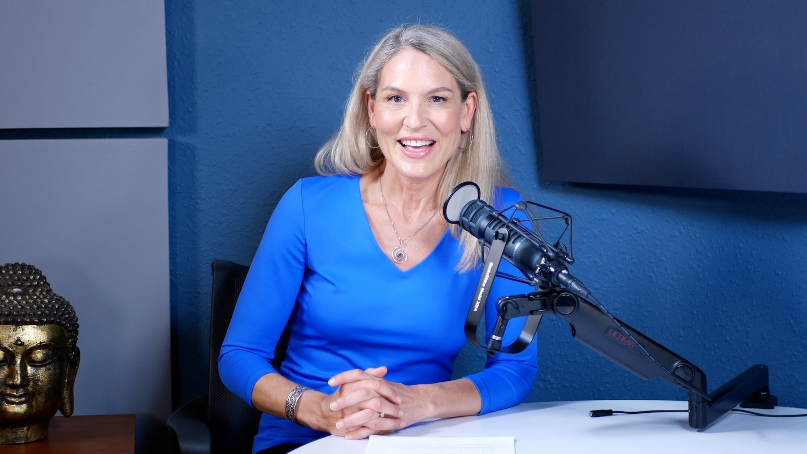
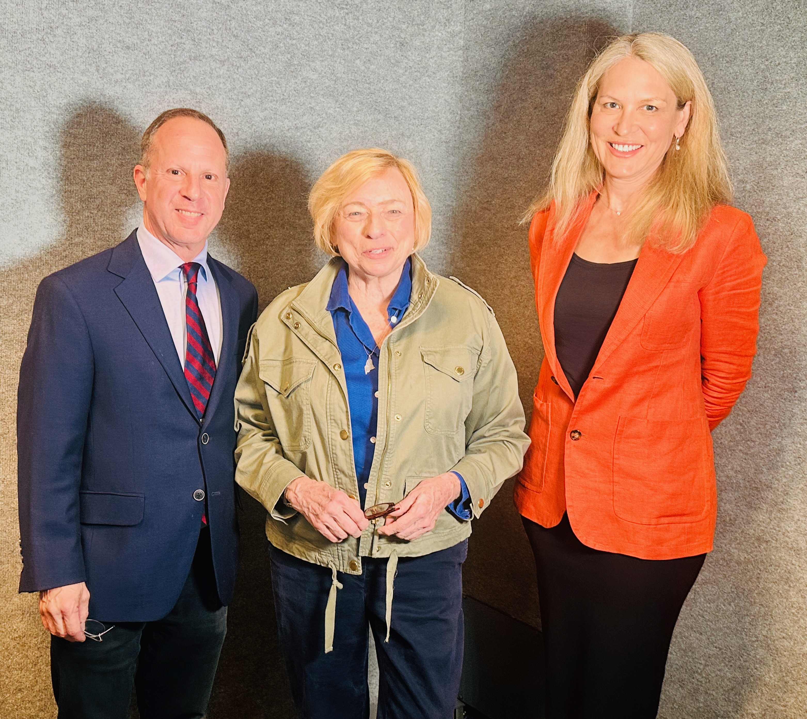

Video podcast
A weekly conversation about creativity and the human spirit.
Lisa hosts conversations with Maine’s artists, healers, physicians, writers, and community leaders. Episodes are filmed in partnership with the Portland Art Gallery and released weekly. The Bountiful Path series is a sub-channel devoted to longer-form pieces tied to the newsletter.
Latest from Radio Maine
Most recent conversation
Watch on Radio Maine →
Where to find Radio Maine
Radio Maine
radiomaine.com
Featured episodes, the Voices archive, and how to be a guest.
Visit Radio Maine →
Video
YouTube
The full Radio Maine episode catalog, plus The Bountiful Path series sub-channel.
@radiomaine →
Audio
Podbean
The audio archive for listeners who prefer the show on a podcast app.
radiomaine.podbean.com →

Also on the air
Lisa also co-hosts A Healthy Conversation with Dr. Jeffrey Barkin on Newsradio WGAN, a separate weekly radio show interviewing national leaders and local experts on policy, public health, technology, and the environment.
Listen on WGAN →Earlier work
Before Radio Maine, Lisa hosted Love Maine Radio from 2011 to 2018, originally The Dr. Lisa Radio Hour & Podcast. A curated selection of episodes is preserved in the archive.
Love Maine Radio archive →